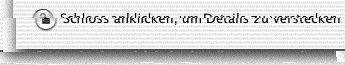

View Keyring zeigt Keyring-Datenbanken an, die von Keyring for PalmOS erzeugt werden.
Ihr verschlüsselte Datenbank wird gesichert, wenn Sie einen HotSync-Vorgang mit Ihrem Palm durchführen. Die verschlüsselte Datenbank heißt Keys-Gtkr.pdb ist üblicherweise in folgendem Ordner: ~/Dokumente/Palm/Users/HotSync Benutzername/Backups
Um View Keyring zu benutzen, öffnen Sie einfach Ihre verschlüsselte Datenbank über das Datei-Menü oder ziehen Sie die Datei auf das View Keyring-Symbol
Das erscheinende Fenster zeigt zur linken Seite alle Schlüsselnamen. Wie in Keyring for PalmOS ist der Schlüsselring geschloßen und Sie können keine Details der Schlüssel sehen.
Um den Schlüsselbring zu öffnen, klicken Sie auf das Schloß in der linken unteren Ecke des Fensters.
Ein Dialog fordert zur Eingabe des Passworts auf. Geben Sie das selbe Passwort ein, welches Sie für Keyring for PalmOS verwendet haben und klicken Sie auf OK.

Wenn der Schlüsselring geöffnet ist, klicken Sie auf den Namen eines Schlüssels und die Details werden auf der rechten Seite angezeigt.
Um den Ring zu schließen, klicken Sie wieder auf das Schloß.

Keyring for PalmOS benutzt die normalen Palm-Kategorien, um Schlüssel effizient organisieren zu können. View Keyring unterstützt diese Kategorien.: Wählen Sie eine Kategorie aus der Liste des Popup-Menüs in der oberen rechten Ecke des Fensters.